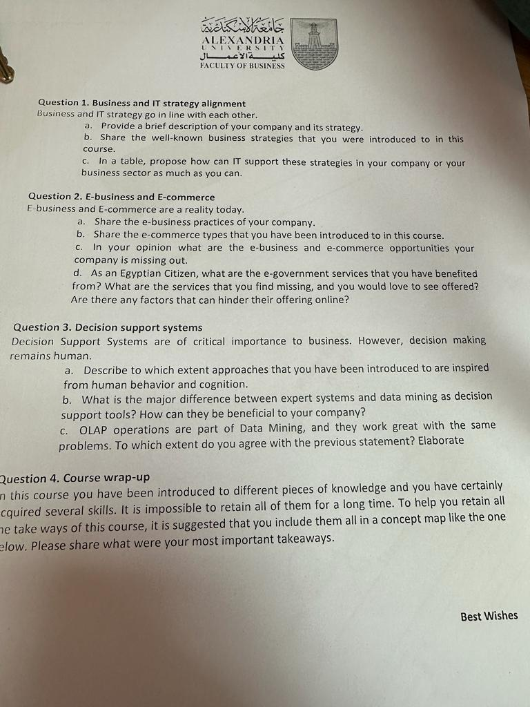

Model 2: e-commerce & e-government
A reshuffled version of her paper. Same pillars, resliced: the strategy table again, then a deeper e-business / e-commerce / e-government question, the decision-support contrasts she loves, and a concept-map wrap-up.
The real paper
Question 1. Business and IT strategy alignment. "Business and IT strategy go in line with each other."
- Provide a brief description of your company and its strategy.
- Share the well-known business strategies that you were introduced to in this course.
- In a table, propose how can IT support these strategies in your company or your business sector as much as you can.
Question 2. E-business and E-commerce. "E-business and E-commerce are a reality today."
- Share the e-business practices of your company.
- Share the e-commerce types that you have been introduced to in this course.
- In your opinion, what are the e-business and e-commerce opportunities your company is missing out.
- As an Egyptian Citizen, what are the e-government services that you have benefited from? What are the services that you find missing, and you would love to see offered? Are there any factors that can hinder their offering online?
Question 3. Decision support systems. "Decision Support Systems are of critical importance to business. However, decision making remains human."
- Describe to which extent the approaches that you have been introduced to are inspired from human behavior and cognition.
- What is the major difference between expert systems and data mining as decision support tools? How can they be beneficial to your company?
- "OLAP operations are part of Data Mining, and they work great with the same problems." To which extent do you agree with the previous statement? Elaborate.
Question 4. Course wrap-up. It is impossible to retain everything for a long time. To help you retain all the takeaways, include them all in a concept map. Please share what were your most important takeaways.

Strategy alignment (same as the classic paper)
Identical to the classic paper: a tight company description, the five competitive strategies (cost leadership, differentiation, innovation, growth, alliance), and a two-column "use IT to..." table. The full worked answer and table are on the classic paper page, do not re-learn it twice.
E-business, e-commerce types, and e-government
(a) E-business practices. List how your company already uses the internet internally and with partners: e-procurement, supplier extranets, ERP, online banking, email/collaboration, any customer portal.
(b) E-commerce types. Name them cleanly from Chapter 8: B2C, B2B, C2C (add B2G/e-government and C2B if you like), plus the marketplace types (one-to-many, many-to-one, many-to-many).
(c) Missed opportunities. Be specific about what your company could do online but does not.
(d) E-government. Name real Egyptian e-gov services you have used, what is missing, and the barriers (digital literacy, trust, integration, infrastructure).
Suggested time: about 30 minutes.
(a) Our e-business practices todayverify: an ERP linking finance, procurement and maintenance; e-procurement and supplier communication; online banking and electronic payments; email and collaboration tools internally; and electronic document and data systems for the plant. These are e-business (using the internet to run the business), even though we sell little directly online yet.
(b) The e-commerce types from the course: B2C (business to consumer), B2B (business to business, which is where a refiner sits), C2C (consumer to consumer, like marketplaces), and B2G / e-government (business or citizen to government). Marketplaces also come in shapes: one-to-many (a seller's own store), many-to-one (e-procurement, many suppliers to one buyer) and many-to-many (an open exchange).
(c) The opportunities we miss: a B2B customer portal for ordering products and by-products online, and a fuller e-procurement marketplace with suppliers. Both cut cost, speed transactions and give us demand data we do not capture today.
(d) As a citizen I have benefited from Egypt's e-government push: paying utilities and traffic fines online, the Digital Egypt portal, vehicle and document services, and online appointment bookingverify. What I would love to see: fully integrated services so I do not re-enter the same data at every agency, and more services completed entirely online without a physical visit. The factors that hinder this are real: uneven digital literacy and internet access, citizens' trust and security worries, weak integration between government databases, and bureaucratic and legal habits built around paper.
The decision-support contrasts
(a) Show which AI approaches copy human thinking: neural networks (modelled on the brain), fuzzy logic (human vague reasoning, "very hot"), expert systems (a human expert's rules), genetic algorithms (evolution), intelligent agents. This is the cognitive-science branch of AI.
(b) The clean contrast: an expert system applies rules a human expert put in (knowledge in, advice out, cannot learn); data mining discovers new patterns from raw data (data in, knowledge out). Then say how each helps your company.
(c) The statement is a trap, disagree. OLAP is not part of data mining. Say why and contrast them.
Suggested time: about 30 minutes.
(a) Several approaches are directly inspired by human behaviour and cognition. Neural networks mimic the brain's web of neurons and learn from data. Fuzzy logic reasons with vague terms the way people do ("the bearing is running very hot") rather than exact numbers. Expert systems capture a human expert's IF-THEN reasoning. Genetic algorithms copy natural selection, and intelligent agents act on our behalf like a helpful assistant. So a large part of AI is, quite literally, an attempt to copy how humans think, learn and reason, which fits her point that "decision making remains human": these tools imitate and support human judgement rather than abolish it.
(b) The major difference: an expert system works from knowledge a human expert has already put in as rules, it applies known expertise to give advice and cannot discover anything new or learn on its own (knowledge in → advice out). Data mining works the opposite way, it digs through raw historical data to find patterns nobody knew were there (data in → knowledge out). For us, an expert system would preserve our senior operators' troubleshooting knowledge and give consistent advice on the night shift; data mining would surface hidden cost and reliability patterns in our process and maintenance history. One applies expertise we have; the other finds knowledge we did not know we had.
(c) I disagree that OLAP operations are part of data mining. They are different tools that complement each other. OLAP is user-driven: you already know the question and you slice known data to answer it, its operations are consolidation (roll-up), drill-down, and slice-and-dice. Data mining is discovery-driven: it finds patterns and relationships you did not think to ask about. OLAP shows you the data from angles you choose; data mining reveals the surprises. They often sit in the same BI platform and work well together, but OLAP is not a subset of data mining, so the statement is only half right.
Your most important takeaways
Draw a simple concept map: a central node "IT Strategy", branching to the big themes, with one line each. You can sketch it as boxes and arrows. Keep it to 6 to 8 nodes.
Central node "IT supports business strategy", branching to:
- Competitive strategy (Chapter 2): cost, differentiation, innovation, growth, alliance, supported by IT.
- Enterprise systems (Chapter 7): ERP, CRM, SCM integrate the company.
- E-commerce (Chapter 8): selling and buying online, B2B/B2C.
- Decision support (Chapter 9): MIS, DSS, BI, AI, but the human decides.
- Data as an asset (Chapter 5): governance, quality, warehouse, mining.
- Security & law (Chapter 11): risks, ethics, Data Protection 151/2020 and Cyber Crime 175/2018.
- Delivering & running it (Chapters 10 & 12): build, convert, govern across the enterprise.
Each branch feeds back to the centre: technology only matters when it advances the business strategy.